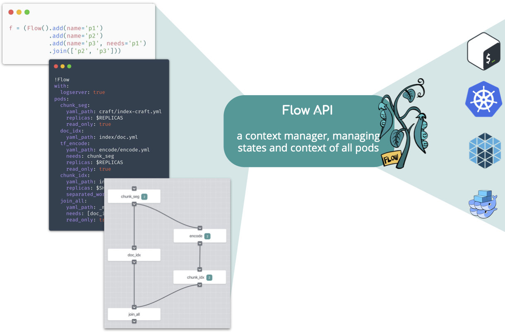
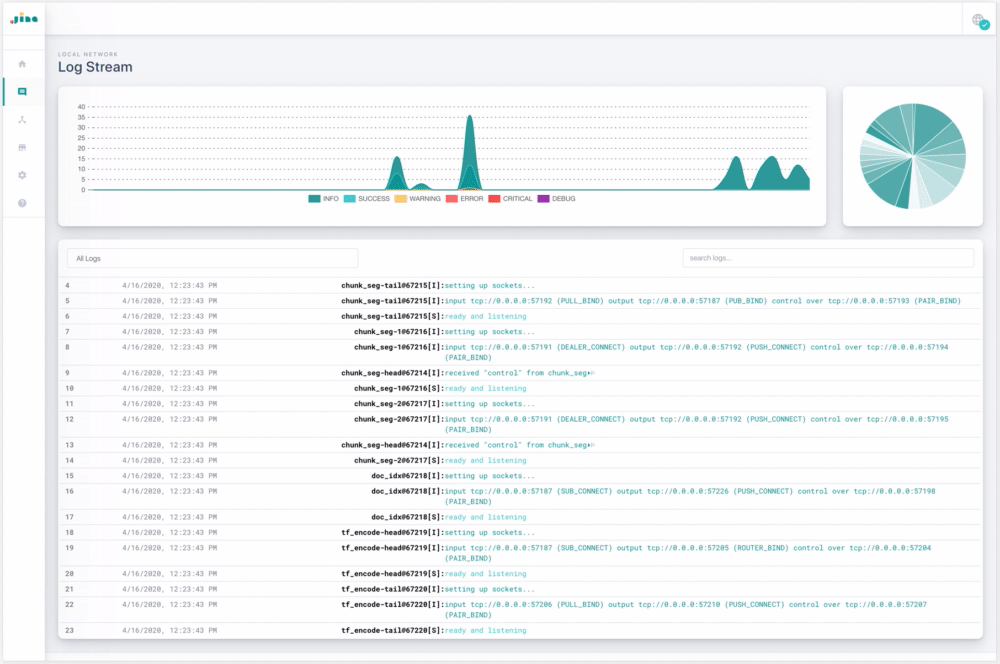

Using Flow API to Compose Your Jina Workflow#
In search systems, tasks such as indexing often involve multiple steps: preprocessing, encoding, storing, etc. In Jina’s architecture, each step is implemented by an Executor and wrapped by a Pod. This microservice design makes the whole pipeline flexible and scalable. Accomplishing a task is then orchestrating all these Pods to work together, either sequentially or in parallel; locally or remotely.
The Flow API is a context manager for Pods. Each Flow object corresponds to a real-world task. It helps the user to manage the states and contexts of all Pods required in that task. The Flow API translates a workflow defined in Python code, YAML file, or interactive graph to a runtime backed by multi-thread/process, Kubernetes, Docker Swarm, etc. Users don’t need to worry about where the Pod is running or how the Pods are connected.

Use Flow API in Python
Use Flow API in YAML
Design a Flow with Dashboard
Use Flow API in Python#
Create a Flow#
To create a new Flow:
from jina.flow import Flow
f = Flow()
Flow() accepts some arguments, see jina flow --help or our documentation for details. For example, Flow(log_server=True) will enable sending logs to the dashboard.
When the arguments given to Flow() cannot be parsed, they are propagated to all the Flow’s Pods for parsing (if they are accepted, see jina pod --help for the list of arguments). For example:
f = Flow(read_only=True)
will set the read_only attribute of all Pods in f to True.
Add Pod into the Flow#
To add a Pod to the Flow, simply call .add():
f = (Flow().add(name='p1', uses='mypod1.yml')
.add(name='p2', uses='mypod2.yml', timeout_ready=50000)
.add(name='p3', uses='mypod3.yml', read_only=True))
This will create a sequential workflow:
gateway -> p1 -> p2 -> p3 -> gateway
The input of each Pod is the output of the last Pod in sequential order. The gateway is the entrypoint of the whole Jina network. The gateway Pod is automatically added to every Flow, of which the output is the first Pod and the input is the last Pod defined in the Flow.
All accepted arguments follow the command line interface of Pod, which can be found in jina pod --help. Just remember to replace the dash - to underscore _ in the name of the argument when referring to it in Python.
Besides the file path, in Flow API uses can accept other types:
Type |
Example |
Remark |
|---|---|---|
YAML file path |
|
|
Inline YAML |
|
don’t forget |
The name of an executor listed here |
|
only the executors that have full default values can be directly used |
Built-in simple executors listed here |
|
Always starts with |
Add a Containerized Pod into the Flow#
To run a Pod in a Docker container, simply specify the image argument:
f = (Flow().add(name='p1')
.add(name='p2', image='jinaai/hub.executors.encoders.bidaf:latest')
.add(name='p3'))
This will run p2 in a Docker container equipped with the image jinaai/hub.executors.encoders.bidaf:latest. More information on using containerized Pod can be found in our documentation.
Add a Remote Pod into the Flow#
To run a Pod remotely, simply specify the host and port_expose arguments. For example:
f = (Flow().add(name='p1')
.add(name='p2', host='192.168.0.100', port_expose=53100)
.add(name='p3'))
This will start p2 remotely on 192.168.0.100, whereas p1 and p3 run locally.
To use remote Pods, you need to start a gateway on 192.168.0.100 in advance. More information on using remote Pods can be found in our documentation.
Add a Remote Containerized Pod into the Flow#
A very useful pattern is to combine the above two features together:
f = (Flow().add(name='p1')
.add(name='p2', host='192.168.0.100', port_expose=53100,
image='jinaai/hub.executors.encoders.bidaf:latest')
.add(name='p3'))
This will start p2 remotely on 192.168.0.100 running a Docker container equipped with the image jinaai/hub.executors.encoders.bidaf:latest. Of course Docker is required on 192.168.0.100. More information on using remote Pods can be found in our documentation.
Parallelize the Steps#
By default, if you keep adding .add() to a Flow, it will create a long chain of sequential workflow. You can parallelize some of the steps by using needs argument. For example,
f = (Flow().add(name='p1')
.add(name='p2')
.add(name='p3', needs='p1'))
This creates a workflow, where p2 and p3 work in parallel with the output of p1.
gateway -> p1 -> p2
|
-> p3 -> gateway
Waiting for Parallel Steps to Finish#
In the prior example, the message is returned to the gateway regardless of the status of p2. To wait for multiple parallel steps to finish before continuing, you can do:
f = (Flow().add(name='p1')
.add(name='p2')
.add(name='p3', needs='p1')
.join(['p2', 'p3']))
which gives
gateway -> p1 -> p2 ->
| | -> wait until both done -> gateway
-> p3 ->
Run a Flow#
To run a Flow, simply use the with keyword:
f = (Flow().add(...)
.add(...))
with f:
# the flow is now running
Though you can manually call the start() method to run the flow, you also need to call the corresponding close() method to release the resource. Using with saves you the trouble, as the resource is automatically released when running out of the scope.
Test Connectivity with Dry Run#
You can test the whole workflow with dry_run(). For example:
with f:
f.dry_run()
This will send a ControRequest to all pods following the topology you defined. You can use it to test the connectivity of all pods.
Iterate over Pods in the Flow#
You can iterate the Pods in a Flow like you would a list:
f = (Flow().add(...)
.add(...))
for p in f.build():
print(f'{p.name} in: {str(p.head_args.socket_in)} out: {str(p.head_args.socket_out)}')
Note f.build() will build the underlying network context but not run the Pods. It is very useful for debugging.
Feed Data to the Flow#
You can use .index(), .search() to feed index data and search query to a Flow:
with f:
f.index(input_fn)
with f:
f.search(input_fn, top_k=50, output_fn=print)
input_fnis anIterator[bytes], each of which corresponds to the representation of a Document with bytes.output_fnis the callback function after each request, and takes aRequestprotobuf as its only input.
A simple input_fn is defined as follows:
def input_fn():
for _ in range(10):
yield b's'
# or ...
input_fn = (b's' for _ in range(10))
Please note that the current Flow API does not support using
index()andsearch()together in the samewithscope. This is because the workflow ofindex()andsearch()are usually different and you cannot use one workflow for both tasks.
Feed Data to the Flow from Other Clients#
If you don’t use Python as a client, or your client and Flow are in different instances, you can keep a Flow running and use a client in another language to connect to it:
import threading
with f:
f.block()
Please check out our hello world in client-server architecture for a complete example.
WARNING: don’t use a while loop to do the waiting, it is extremely inefficient:
with f:
while True: # <- dont do that
pass # <- dont do that
Use Flow API in YAML#
You can also write a Flow in YAML:
!Flow
with:
logserver: true
pods:
chunk_seg:
uses: craft/index-craft.yml
replicas: $REPLICAS
read_only: true
doc_idx:
uses: index/doc.yml
tf_encode:
uses: encode/encode.yml
needs: chunk_seg
replicas: $REPLICAS
read_only: true
chunk_idx:
uses: index/chunk.yml
replicas: $SHARDS
separated_workspace: true
join_all:
uses: _pass
needs: [doc_idx, chunk_idx]
read_only: true
You can use enviroment variables with $ in YAML. More information on the Flow YAML Schema can be found in our documentation.
Load a Flow from YAML#
from jina.flow import Flow
f = Flow.load_config('myflow.yml')
Start a Flow Directly from the CLI#
The following command will start a Flow from the console and hold it for a client to connect.
jina flow --yaml-path myflow.yml
Design a Flow with Dashboard#
With Jina Dashboard, you can interactively drag and drop Pods, set their attribute and export to a Flow YAML file.

More information on the dashboard can be found here.